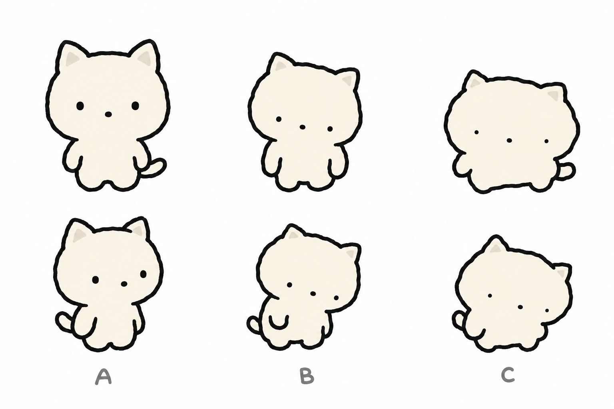

보리 화이트 — 하찮음 3단계
gpt-image-2.5-sunburst · high · 1536×1024 · $0.058 · 깜자 3장 스타일 레퍼런스 · 프롬프트: bori-white-prompt.txt

- 공통: 오프화이트 #F7F4EE 단색, 귀 안쪽 #E6E0D6, 코 점, 입 없음, 블러셔 없음, 마커 없음.
- A 약: 비율 유지, 눈만 작고 벌어짐, 팔 축 늘어짐.
- B 중: 눈 더 작고 아래로, 귀 축소, 어깨 처짐·고개 기울임, 몸통 울퉁불퉁, 다리 짧음.
- C 강: 눈 극소·최대 벌어짐, 귀 비대칭, 몸이 거의 덩어리, 팔다리 돌기, 늘어진 자세.